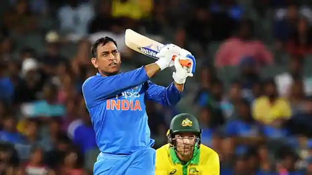
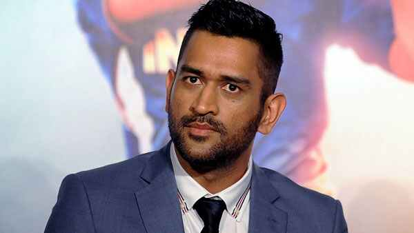

Mahendra Singh Dhoni ( pronunciation (help•info) born 7 July 1981), is a former Indian international cricketer who captained the Indian national team in limited-overs formats from 2007 to 2017 and in Test cricket from 2008 to 2014. Under his captaincy, India won the inaugural 2007 ICC World Twenty20, the 2010 and 2016 Asia Cups, the 2011 ICC Cricket World Cup and the 2013 ICC Champions Trophy. A right-handed middle-order batsman and wicket-keeper, Dhoni is one of the highest run scorers in One Day Internationals (ODIs) with more than 10,000 runs scored and is considered an effective "finisher" in limited-overs formats.[2][3][4] He is widely regarded as one of the greatest wicket-keeper batsmen and captains in the history of the game.[5] He was also the first wicket-keeper to effect 100 stumpings in ODI cricket.[6]
Dhoni made his ODI debut on 23 December 2004 against Bangladesh, and played his first Test a year later against Sri Lanka. He has been the recipient of many awards, including the ICC ODI Player of the Year award in 2008 and 2009 (the first player to win the award twice), the Rajiv Gandhi Khel Ratna award in 2007, the Padma Shri, India's fourth highest civilian honour, in 2009 and the Padma Bhushan, India's third highest civilian honour, in 2018.[7] Dhoni was named as the captain of the ICC World Test XI in 2009, 2010 and 2013. He has also been selected a record 8 times in ICC World ODI XI teams, 5 times as captain. The Indian Territorial Army conferred the honorary rank of Lieutenant Colonel[8] to Dhoni on 1 November 2011. He is the second Indian cricketer after Kapil Dev to receive this honour.

Dhoni also holds numerous captaincy records such as the most wins by an Indian captain in ODIs and T20Is, and most back-to-back wins by an Indian captain in ODIs. He took over the ODI captaincy from Rahul Dravid in 2007 and led the team to its first-ever bilateral ODI series wins in Sri Lanka and New Zealand. In June 2013, when India defeated England in the final of the Champions Trophy in England, Dhoni became the first captain to win all three ICC limited-overs trophies (World Cup, Champions Trophy and the World Twenty20). After taking up the Test captaincy in 2008, he led the team to series wins in New Zealand and the West Indies, and the Border-Gavaskar Trophy in 2008, 2010 and 2013. In 2009, Dhoni also led the Indian team to number one position for the first time in the ICC Test rankings.
Early life and background
Dhoni was born in Ranchi, Bihar (now in Jharkhand),[19] and he hails from a Hindu Rajput family.[20] His paternal village Lwali is in the Lamgara block of the Almora District of Uttarakhand. Dhoni's parents moved from Uttarakhand to Ranchi, where his father Pan Singh worked in junior management positions in MECON. Dhoni has a sister Jayanti Gupta and a brother Narendra Singh Dhoni.[21][22] Dhoni is a fan of Adam Gilchrist, and his childhood idols were cricket teammate Sachin Tendulkar, Bollywood actor Amitabh Bachchan and singer Lata Mangeshkar[23][24]

Dhoni studied at DAV Jawahar Vidya Mandir, Shyamali, Ranchi, Jharkhand where he initially excelled in badminton and football and was selected at district and club level in these sports. Dhoni was a goalkeeper for his football team and was sent to play cricket for a local cricket club by his football coach. Though he had not played cricket, Dhoni impressed with his wicket-keeping skills and became the regular wicketkeeper at the Commando cricket club (1995–1998). Based on his performance at club cricket, he was picked for the 1997/98 season Vinoo Mankad Trophy Under-16 Championship and he performed well.[22] Dhoni focused on cricket after his 10th standard.[25] He was a Travelling Ticket Examiner (TTE) at Kharagpur railway station from 2001 to 2003, under South Eastern Railway in Midnapore (W), a district in West Bengal.[26][27][28] His colleagues remember him as a very honest, straightforward employee of the Indian Railways. But Dhoni also had a mischievous side to his personality. Once, while staying at the railway quarters, Dhoni and a couple of his friends covered themselves in white bedsheets and walked around in the complex late in the night. The night guards were fooled into believing that there were ghosts moving around in the complex. The story made big news on the next day.[29][30][31]
Early career
Junior cricket in Bihar
In 1998, Dhoni was selected by Deval Sahay to play for the Central Coal Fields Limited (CCL) team.[32] Till 1998 Dhoni, who was in class 12th in school, had played only school cricket and club cricket and no professional cricket. One of the famous episodes, when Dhoni used to play for CCL, was when Deval Sahay used to gift him Rs 50 for each six that he hit in Sheesh Mahal tournament cricket matches.[33] Playing for CCL, he got a chance to bat up the order. He grabbed the opportunity and scored centuries and helped CCL move to the A division.[34] Deval Sahay impressed by his hard-hitting shots and dedication, used his contacts in Bihar Cricket Association to push for his selection in the Bihar team.[35] Deval Sahay, an ex Bihar Cricket Association Vice-President, was the Ranchi District Cricket President at that time and was instrumental in pushing Dhoni to the big stage of Ranchi team, junior Bihar cricket team and eventually senior Bihar Ranji Team for the 1999–2000 season. Within 1 year, Dhoni moved from playing in CCL to the Bihar Ranji team.[36][37] Dhoni has credited Deval Sahay for instilling discipline in him.[38] Dhoni was included in the Bihar U-19 squad for the 1998–99 season and scored 176 runs in 5 matches (7 innings) as the team finished fourth in the group of six and did not make it to the quarter-finals. Dhoni was not picked for the East Zone U-19 squad (CK Nayudu Trophy) or Rest of India squad (MA Chidambaram Trophy and Vinoo Mankad Trophy). Bihar U-19 cricket team advanced to the finals of 1999–2000 Cooch Behar Trophy, where Dhoni made 84 to help Bihar post a total of 357.[39] Bihar's efforts were dwarfed by Punjab U-19s' 839 with Dhoni's future national squad teammate Yuvraj Singh making 358.[40][41] Dhoni's contribution in the tournament included 488 runs (9 matches, 12 innings), 5 fifties, 17 catches and 7 stumpings.[42] Dhoni made it to the East Zone U-19 squad for the CK Nayudu trophy[43] but scored only 97 runs[44] in four matches, as East Zone lost all four matches and finished last in the tournament.[45]
Bihar cricket team
Dhoni made his Ranji Trophy debut for Bihar in the 1999–2000 season, as an eighteen-year-old. He made a half century in his debut match scoring 68* in the second innings against Assam cricket team.[46] Dhoni finished the season with 283 runs in 5 matches. Dhoni scored his maiden first-class century while playing for Bihar against Bengal in the 2000/01 season, in a losing cause.[47] Apart from this century, his performance in the 2000/01 season[48] did not include another score over fifty and in the 2001/02 season, he scored just five fifties in four Ranji matches.[49]
Jharkhand cricket team
Dhoni's performance in the 2002–03 season included three half-centuries in the Ranji Trophy and a couple of half-centuries in the Deodhar Trophy, as he started gaining recognition for his lower-order contribution as well as hard-hitting batting style. In the 2003/04 season, Dhoni scored a century (128*) against Assam in the first match of the Ranji ODI tournament. Dhoni was part of the East Zone squad that won the Deodhar Trophy 2003–2004 season[50][51] and contributed with 244 runs in 4 matches,[52] including a century (114) against Central zone.[53]
In the Duleep Trophy finals, Dhoni was picked over international cricketer Deep Dasgupta to represent East Zone.[54] He scored a fighting half-century in the second innings in a losing cause.[55] Dhoni's talent was discovered via the BCCI's small-town talent-spotting initiative TRDW. Dhoni was discovered by TRDO Prakash Poddar, captain of Bengal in the 1960s, when he saw Dhoni play for Jharkhand at a match in Jamshedpur in 2003, and sent a report to the National Cricket Academy.[56]
India A team
He was recognised for his efforts in the 2003/04 season, especially in the One Day format and was picked for the India A squad for a tour of Zimbabwe and Kenya.[57] Against the Zimbabwe XI in Harare Sports Club, Dhoni had his best wicket-keeping effort with 7 catches and 4 stumpings in the match.[58] In the tri-nation tournament involving Kenya, India A and Pakistan A, Dhoni helped India A chase down their target of 223 against Pakistan A with a half-century.[59] Continuing his good performance, he scored back to back centuries – 120[60] and 119*[61] – against the same team. Dhoni scored 362 runs in 6 innings at an average of 72.40 and his performance in the series received attention from the then Indian captain – Sourav Ganguly[62] and Ravi Shastri, amongst others.